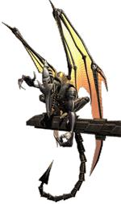
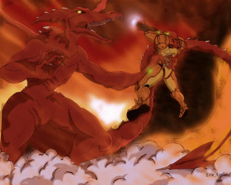

Since you are either an idiot or have a surpise
up your sleeve, you have chosen to awaken the devilish dog Ridley. Now
that you
woke Ridley he looks around as if he is confused, then he looks right
at
you and- he is beginning to GROW!!! He quickly fills the stasis
chamber. You
shield yourelf from the explosion of glass as Ridley breaks free. He
then
grows some more and once he has stopped he spreads his wings and flexes
them
whilst watching you. 
It seems that Ridley remembers you quite
well.
He charges you, and you dodge. You start blasting him but he doesn't
seem
to notice that you are even attempting to hurt him. You keep shooting
but
he doesn't even slow down. You begin charging a super missle but he
grabs
you.
You are ready to fire even though you have finally admited that maybe
waking
Ridley WAS a bad idea.
Game Over, Bounty Hunter.